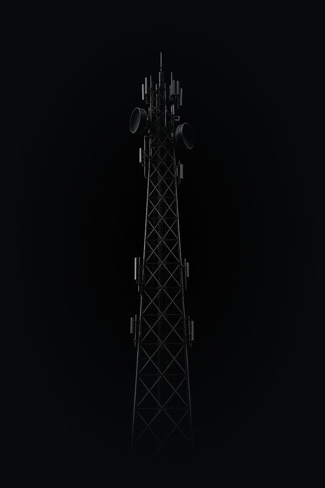

ECHO
Знать, что происходит вокруг
Один сигнал дает ограниченное представление о ситуации.
Больше информации появляется при сравнении наблюдений разных сенсоров, соседних узлов и предыдущих периодов. ECHO хранит эту историю и оценивает достоверность событий.

Земля, воздух и море
Три среды, общий подходTRACE использует акустические, сейсмические и оптические датчики, SEA — гидроакустические и оптические, SKY — пассивные датчики из нескольких точек.
Наблюдение, связь и анализ
Что происходит с данными


Возможности
Отдельные датчики, общая картина
Результат распознавания идет с уровнем уверенности. Качество наблюдения учитывается в анализе.

Показания разных датчиков и соседних узлов дополняют друг друга и уточняют картину.

Наблюдения накапливаются во времени. Новые сигналы сравниваются с предыдущими.

Общий реестр показывает состав сети, доступность устройств и технические предупреждения.
Запросить презентацию
Расскажите о задаче — подготовим материалы под ваш сценарий. Подробности передаются после соглашения о конфиденциальности.
Ответ в течение двух рабочих дней.